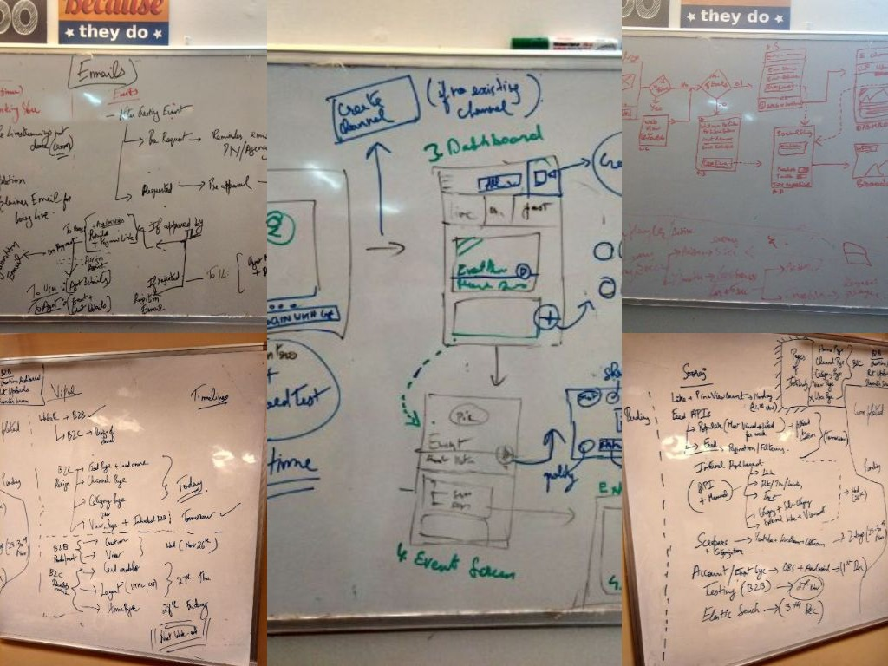
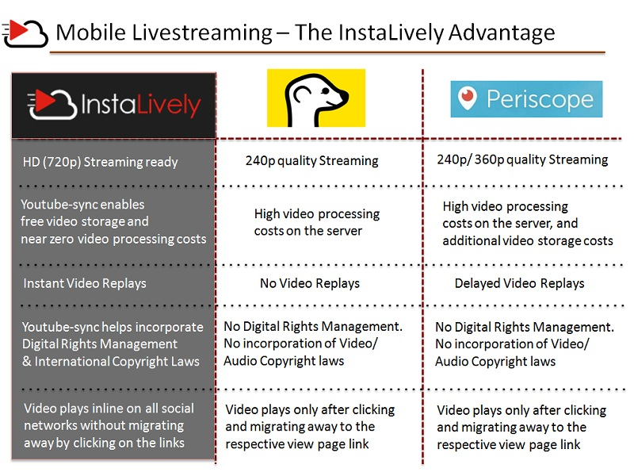
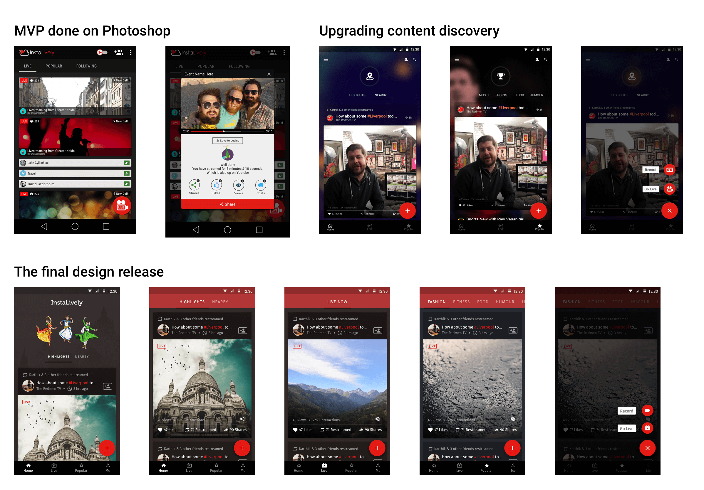
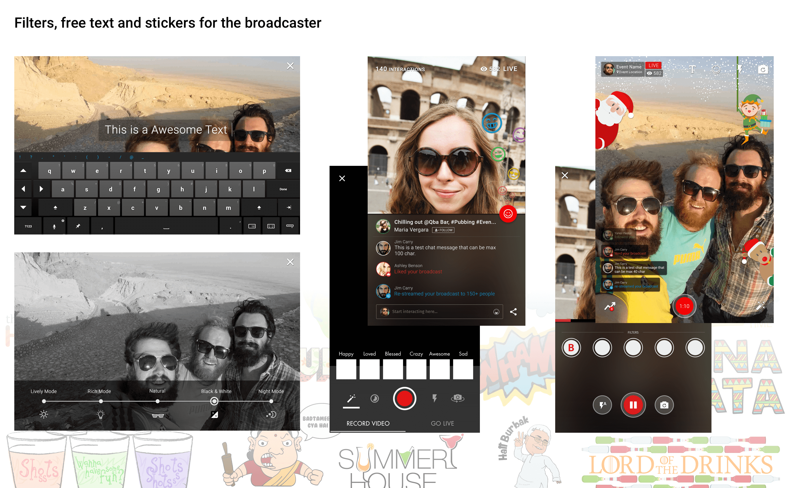

01
Build on what we love
The best logic feels like our own idea. Rather than designing for what's new, I looked to metaphors for what we already know and love.
InstaLively · Livestreaming · 2015
A one-tap livestreaming app that democratised online video for low-bandwidth markets — grown to 25k+ users before its acquisition by Hike.
Role
UI/UX · Branding · Front-end
Period
2015 · Founding team
Platforms
Android · Web
Download

Background
InstaLively broadcasts any event live in a single click — linked straight to your YouTube channel.
The focus was instant video/audio digitisation on low 3G bandwidths using just a mobile app — making it as simple and cost-effective as possible for the everyday enterprise to create and broadcast from any location, democratising online video.
Backed by
GSF Accelerator's Rajesh Sawhney, Google MD Rajan Anandan, SlideShare's Amit Ranjan, Anupam Mittal, Uday Shankar & author Chetan Bhagat — followed by a Series A from SAIF Partners.
Press
Problem
Cross-platform, low-bandwidth video delivery that is also cost-effective — needed in the Asian market so everyday enterprise could create and broadcast content from any location.
Brought on as a freelancer, I became part of the founding team — wearing multiple hats across product design, creative design and web front-end.
Democratise online video — make going live simple, cheap and mobile-first.
Process
The best logic feels like our own idea. Rather than designing for what's new, I looked to metaphors for what we already know and love.
The most compelling product is a better portrait of ourselves. Rather than designing for what's accessible, I designed for moments of potential.
Often users are the best designers. Rather than solving every problem myself, I designed platforms around what we already share.

“The whiteboard was the favourite tool of the moment.”
A small team with cost and time constraints — so no room for formal A/B tests. We leaned on post-stream feedback and WhatsApp groups of platform influencers. Collective intelligence was what we had, and we used it well.
Solution
InstaLively served both worlds — B2C and B2B. The secret sauce was the YouTube Livestreaming API, which let users go live simultaneously across social platforms.

Free to use, built for advanced users who wanted to run their own stream end to end.
Uber-esque: request a professional videographer who arrives at your event to livestream and record — at the tap of a button.

The mobile B2C app got the most attention — it's where we'd acquire users at scale and spread livestreaming awareness as the world went mobile-first.




Impact
Over 1M minutes were broadcast by 25K+ users globally, including 100+ influencers getting over 10K views per stream. In February 2017, InstaLively was acquired by India's leading messaging app, Hike Messenger.
More on the InstaLively YouTube channel ↗. Thanks for reading 🙌